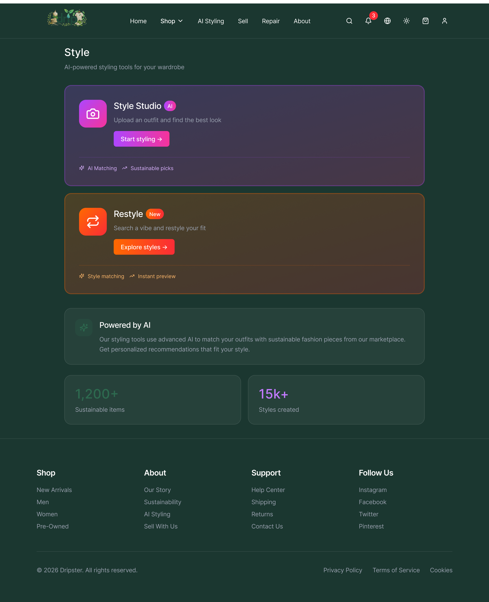
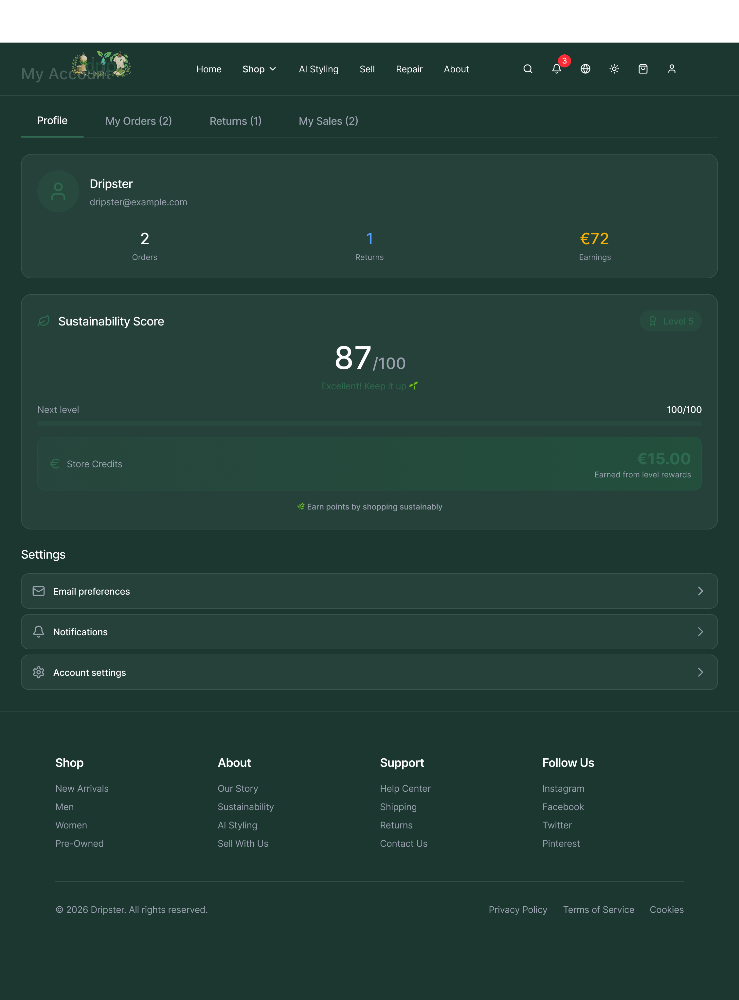
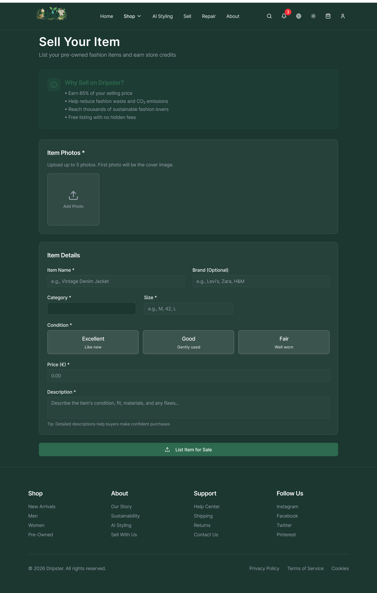
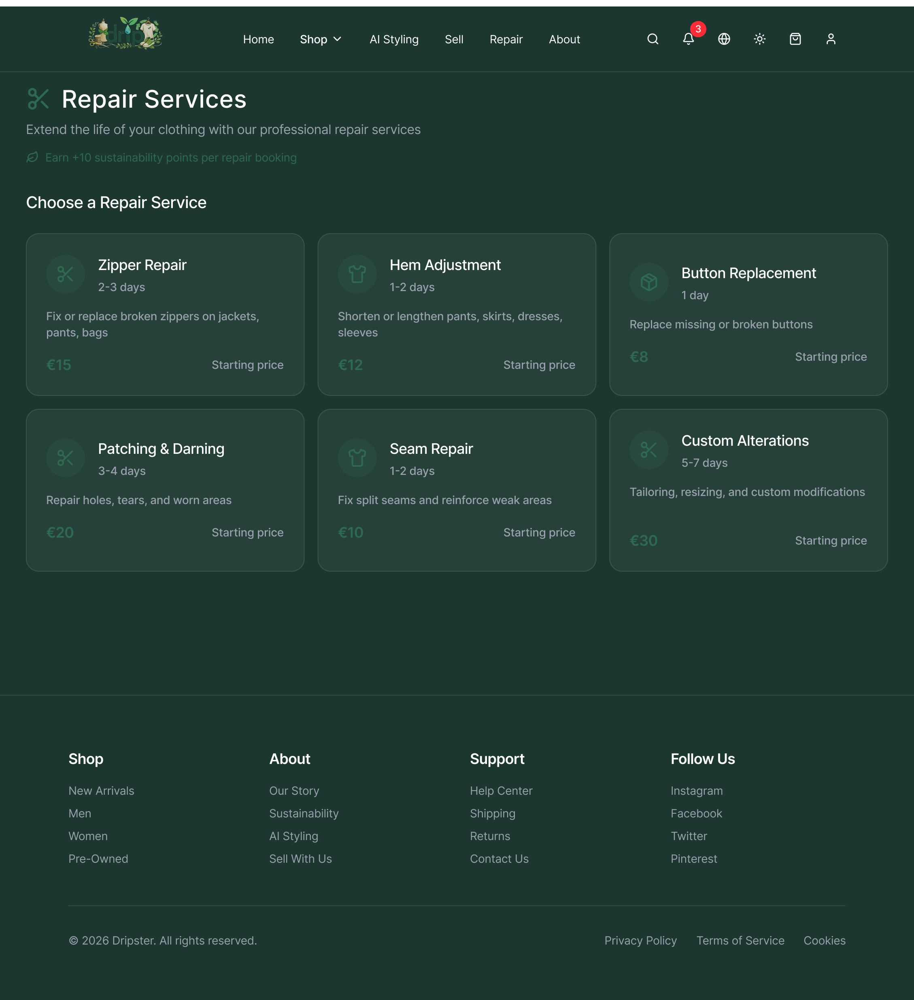

A 12-week design sprint to help a fast fashion retailer enter the circular economy without burning its existing business model. The product problem turned out to be a behavioural one.
Our team of five was asked to design a digital service to help Drip, a fast fashion retailer, enter the circular economy without scrapping its existing business model. That sounds like a product problem. It turned out to be more of a behavioural one.
The gap between what people say they value and what they actually do at checkout is the whole design brief. We spent the first weeks staying in that problem space longer than felt comfortable and the final design is better because of it.


Two key screens from the hi-fi prototype: AI Styling (left) and the Sustainability Profile dashboard (right).
Led exploration phase research into Gen Z clothing behaviour and fashion waste. Systematic searches across Statista, Ellen MacArthur Foundation, and Global Fashion Agenda. Three numbers drove most of our design decisions.
Built the Mary persona independently 21, Cork student, compulsive buyer triggered by sales and seasonal events. Designed to represent the users nobody was designing for yet. Building her pushed the team toward Eco Points as a front-and-centre mechanic.
Championed this during ideation based on Karen's greenwashing skepticism and the EU's Ecodesign for Sustainable Products Regulation. If transparency is a brand claim, Karen does not believe it. If it is verifiable by scan, she does.
Co-led the Figma work from lo-fi sketches through to hi-fi interactive prototype. Key rule: everyone sketched independently before comparing. That gave us genuine design forks to evaluate rather than refining one idea forever.
My secondary research surfaced a cluster of Gen Z data points the team kept returning to throughout ideation and prototyping. These were not background context they were active design constraints.
Gen Z is not lying when they say sustainability matters. They just will not sacrifice price or convenience for it. The design brief is to make the sustainable choice the convenient one not to make people feel guilty for choosing otherwise.
Alexandra (eco-conscious) and Karen (values-driven) were already in the team's thinking. Mary was my addition and she is the one whose behaviour we most needed to understand. Alexandra is already persuaded. Mary is the whole problem.
The Profile dashboard shows Mary's Sustainability Score, Eco Points, and store credit earned. Every design decision here maps back to her core motivation: saving money, not saving the planet. Framing sustainability as a financial reward was the key insight from building her persona.
Empathy Maps were the most useful tool in the project and the one I least expected to be. Alexandra's map revealed something that completely flipped our affordability conversation.
Alexandra was not frustrated with Zara. She was frustrated with Patagonia sustainable alternatives priced out of her student budget. That flipped our whole conversation: we stopped treating low prices as a constraint on sustainability and started treating them as the point.
AI Styling directly addresses what Alexandra's empathy map revealed. She wanted sustainable fashion but could not afford Patagonia prices. Style Studio surfaces affordable sustainable alternatives matched to her existing wardrobe — solving the price barrier without asking her to compromise on style.
During ideation I pushed for what became the QR-based Digital Passport. The idea came from two places: Karen's greenwashing skepticism surfaced in empathy mapping, and the EU's Ecodesign for Sustainable Products Regulation which will require Digital Product Passports for textiles sold in the EU.
A shopper scans a QR code and gets origin, materials, and an environmental impact score. That is a different thing from a sustainability pledge in an Instagram caption. A compliance cost for slow movers is a competitive edge for whoever gets there first.

The Sell screen applies the same transparency principle as the QR passport. Condition grading (Excellent, Good, Fair), accurate descriptions, and verified earnings make every transaction trustworthy. This is what Karen needed to believe the platform was genuine.
We co-led the Figma prototyping work. The rule that made it work: everyone sketched independently at lo-fi before comparing. Two features that were not in the lo-fi emerged at mid-fi wardrobe tracking and a gamified CO2-saved dashboard. Both came from asking what would bring Mary back to the app after her first purchase.
AI Styling emerged at mid-fi stage, not lo-fi. Asking "what brings Mary back between purchases?" unlocked it. Independent sketching before group comparison meant this idea survived on its own merits, not because it was said first in the room.
Every feature was designed to serve Mary's actual motivations not Alexandra's stated values. That distinction shaped every decision about what made the final cut.
Scan any clothing tag to get origin, materials, and an environmental impact score. Verifiable data, not brand claims. Built ahead of EU Ecodesign compliance requirements.
Return, donate, or resell items to earn Eco Points redeemable as store credit. Sustainability framed as money saved not moral credit earned. Mary's primary motivation is always cost.
Scan existing clothes to build a digital inventory with a per-item sustainability score. Designed to bring users back between purchases building the habit before changing the behaviour.
A sustainability score visible before purchase, plus a short cooling-off pause on impulse buys. Intentional friction not bad UX. The opposite of a dark pattern is intentional design.
Visual progress tracker showing CO2 saved, clothes diverted from landfill, and next reward milestone. Makes abstract environmental impact feel immediate and personal for Mary.
Post-purchase flow for unwanted items frictionless resell or donation with minimal steps. Designed for Mary who already donates some clothes but specifically bins fast fashion.
Left: Sell Your Item — 85% earnings, free listing, condition grading. Right: Sustainability Score — gamified CO2 tracking, level progression, and store credits. Both features speak to Mary in her language: money saved and rewards earned.
Not every design thinking tool was equally useful. Being honest about what worked and why is more valuable than listing everything used.
Most useful tool in the project. Alexandra's map revealed she was frustrated with Patagonia, not Zara flipping our entire affordability conversation.
Independent lo-fi sketching before group comparison prevented committing to the first idea said out loud and refining it forever.
Made the emotional experience feel real. Easiest artefact to explain to someone outside the team.
Went too broad too quickly. Lesson: draw the service boundary first, then map inward. We wasted two hours pulling scope back.
Stayed too high-level. Told us roughly where problems were but not what they looked like. Detailed maps are where the design decisions live.
26 questions, no pre-agreed analysis plan. Write the analysis framework before data collection not after.

Repair Services — the feature our customer journey map failed to detail. Six options from €8 Button Replacement to €30 Custom Alterations. A proper sub-flow map would have revealed the anxiety of posting a garment to a stranger, which our five-stage overview completely glossed over.
We ran a 26-question survey with no pre-agreed analysis plan. When results came back the synthesis was chaotic. Never send a survey without a coding framework already written.
The customer journey map stayed too high-level. Detailing the repair booking sub-flow would have surfaced specific friction points like the anxiety of posting a garment to a stranger.
Cattle farmers ended up on the stakeholder map. Define scope first, then map inward from there.
My deposit model idea was rejected in team discussion as feeling punitive. It should have been tested with a low-fidelity prototype before discarding. Good ideas die in conference rooms all the time for the wrong reasons.
My instinct is to arrive at a positioning statement fast and start executing. This project required the opposite. The Mary persona, the value-action gap insight none of those would have happened if we moved to solution mode in week two.
E-commerce UX is built almost entirely around removing friction from the path to checkout. That keeps users like Mary in regret cycles. The opposite of a dark pattern is not neutral design it is intentional design.
The empathy map I built for Alexandra trained me to look for value-action gaps and those exist in SaaS buyers just as much as in fast fashion shoppers. Different context, same mechanism.
Our team had different academic backgrounds and varying English fluency. Visual artefacts democratise collaboration in a way that verbal-only approaches do not.